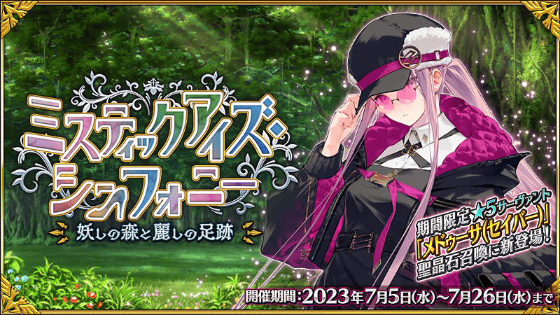
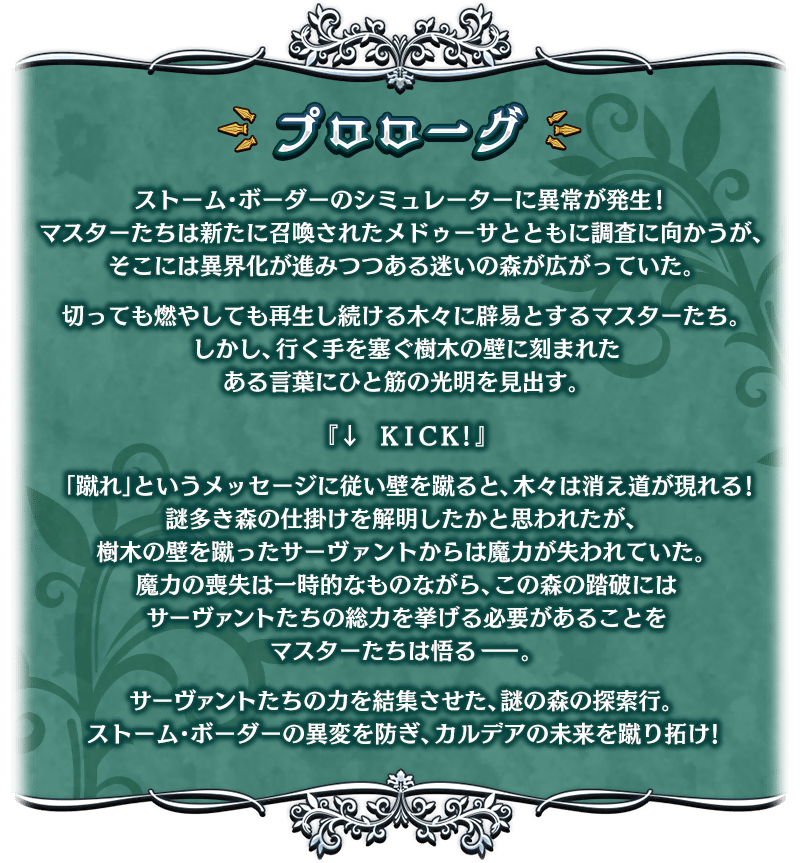
期間限定活動「魔眼交響曲 ～妖異森林與美麗足跡～」自2023年7月5日(三)開幕！
集結從者之力，解開化成妖異森林的模擬裝置之謎！
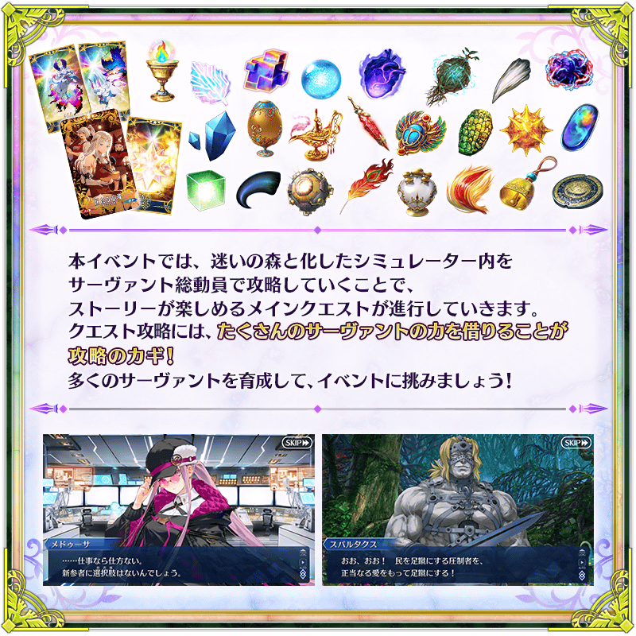
◆活動舉辦期間(3週內)◆
2023年7月5日(三) 19:00～7月26日(三) 11:59
◆活動參加條件◆
滿足以下條件的御主才能參加
・通過2部 第6章「Lostbelt No.6 妖精圓卓領域 阿瓦隆・勒・菲 星辰誕生之刻」
※不需要通過亞種特異點(從Ⅰ到Ⅳ)、主線關卡第2部 第5.5章。
※本頁面皆為開發中圖片。會有與實際圖片相異的情況。

由於在「Fate/Grand Order 迦勒底放送局 輕量版 FGO Fes. 2023＆遊戲最新情報」2則對象推特的RT合計數達成7萬轉推，實施放送記念登入獎勵！
在下述期間中登入的話，贈送聖晶石14個。
◆領取期間◆
2023年7月6日(四) 3:00～7月13日(四) 2:59
上述期間中，在初次登入到「Fate/Grand Order」的時間點，贈予到禮物箱。
※期間內未登入的話無法領取。
※禮物只能領取1次。
◆贈送內容◆
聖晶石 14個
◆贈送對象◆
2023年7月6日(四) 2:59前通過「特異點F 炎上汙染都市 冬木」的御主對象
※上述時間前，在管理室(ターミナル)畫面的關卡橫幅必須要有「CLEAR」的文字顯示。
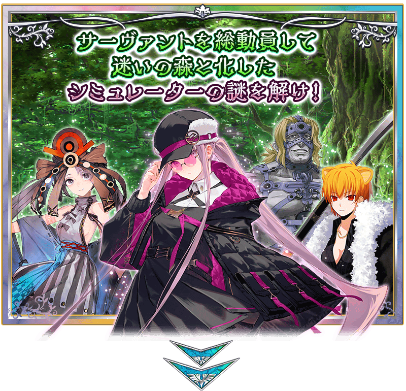 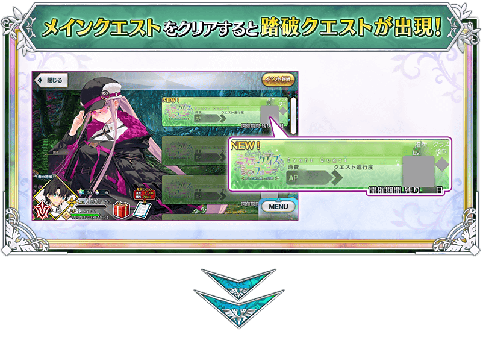 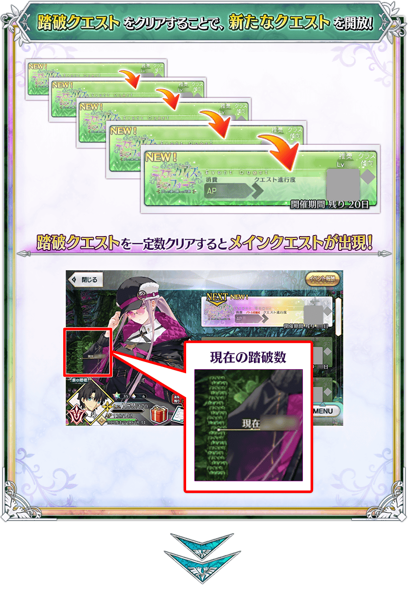 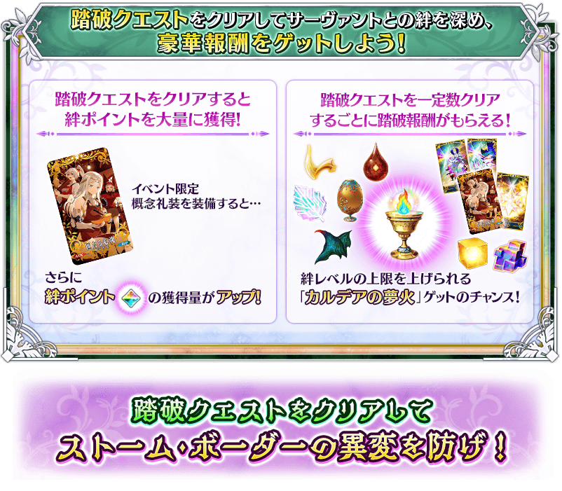
通過期間限定活動「魔眼交響曲 ～妖異森林與美麗足跡～」特定關卡一定數量後，會出現枝葉關卡。
通過枝葉關卡後除了得到各式各樣報酬外，想開放主線關卡的話必須通過枝葉關卡。
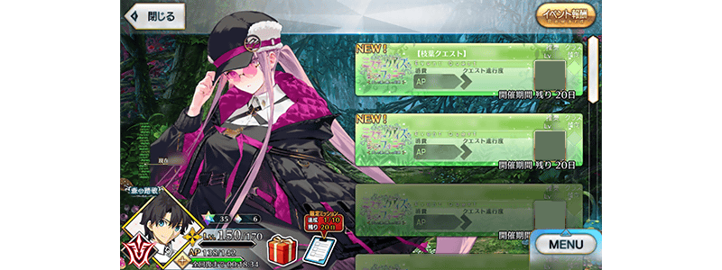
通過本活動各關卡的話，在關卡出撃的從者會變成「疲勞」狀態而無法出撃。
將尚未「疲勞」的從者替換進編制，挑戰下個關卡吧！
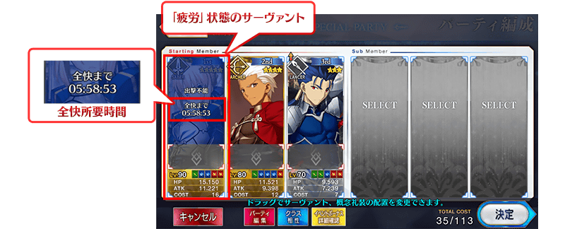
※只有戰鬥勝利時會變成「疲勞」狀態，敗北或撤退的情況不會變成「疲勞」狀態。 ※持有好幾位同樣從者的情況，未出撃的同從者也同樣變得無法出撃。(就算不同再臨階段的情況也同様會變成「疲勞」狀態。) ※適用「疲勞」狀態的只有期間限定活動「魔眼交響曲 ～妖異森林與美麗足跡～」內，平常的主線關卡和強化關卡等常駐的關卡為對象外。
關於「疲勞」狀態的回復
從者的「疲勞」狀態會隨著時間經過來回復。請注意無法透過道具和令咒等進行回復。
還有，在進行主線關卡所開放的「休息」設定從者的話，能加快「疲勞」狀態的回復速度。
讓「疲勞」中的從者於休息場所休息，管理從者的「疲勞」讓其更快變得可再出撃吧！
※「疲勞」狀態要「痊癒所需時間」變成0:00:00才結束回復。 ※使用休息場所中的從者能任意替換，加快回復速度效果於休息途中停止的時間點會消失。 ※請注意使用休息場所中的從者無法移動到靈基保管室。 ※請注意使用裝置的時間與設定未設定成「自動」的情況，會有回復為止的時間未正確顯示的情況。
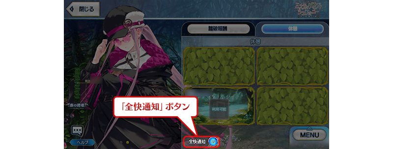
◆關於休息場所使用時的「痊癒通知」◆
「痊癒通知」為ON的狀態下，在休息場所設定從者後結束程式的話，在休息場所設定的從者全員痊癒時，變得會收到推送通知。
※使用本功能時，請變更使用裝置中收到從程式的通知設定。就算本功能為ON的狀態，在使用裝置設定成不收到通知的情況，也不會顯示推送通知。 ※設定方法會因使用的裝置而異。
休息場所與從者的相性
「休息」內的休息場所會透過主線關卡的進行而增加。
另外， 各休息場所有著與從者的相性，設定相性良好從者的情況，會更加快回復速度。
儘可能選擇與從者相性良好的休息場所，更有效率回復「疲勞」狀態吧！
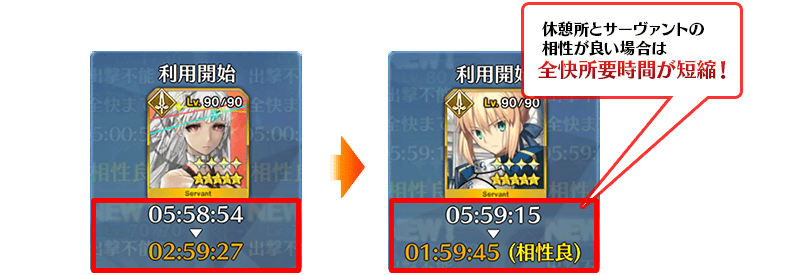
期間限定活動「魔眼交響曲 ～妖異森林與美麗足跡～」中，於「從者選擇畫面」的「排序順序的設定」追加「痊癒所需時間順序」。
「智慧排序」功能為ON的話，變得會考量是否「疲勞」狀態來排序，可優先顯示能出撃的從者。
另外，在為了疲勞回復使用各休息場所時，選擇「痊癒所需時間順序」且「智慧排序」功能為ON的話，變得會考量與休息場所的相性，以回復效率高的順序優先顯示「疲勞」狀態的從者。
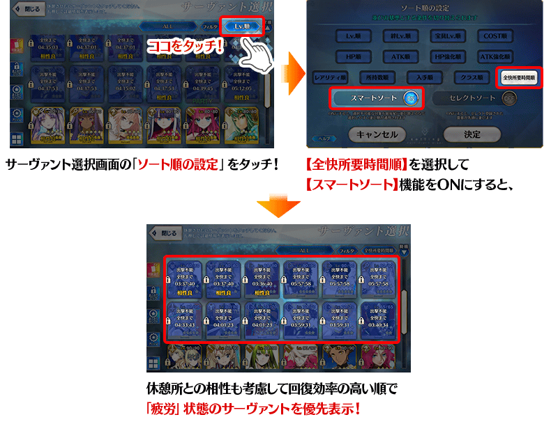
期間限定活動「魔眼交響曲 ～妖異森林與美麗足跡～」中，除一部份的關卡外與平常的隊伍編制不同，無法選擇支援從者做為隊伍的成員。
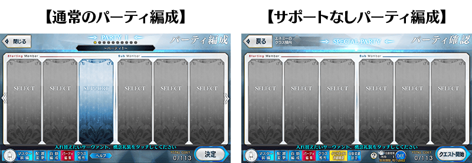
以通過期間限定活動「魔眼交響曲 ～妖異森林與美麗足跡～」所有主線關卡的御主做為對象，開放高難易度的「挑戰關卡」。
「挑戰關卡」就算通過後也不會消失，可以變更從者和概念禮裝的組合等後無限次挑戰。
另外，「挑戰關卡」中可使用好友的支援從者，就算「疲勞」狀態的從者也可在關卡出撃。
就算通過「挑戰關卡」從者也不會變成「疲勞」狀態。
※關卡通過報酬、戰利品、御主EXP、魔術禮裝EXP、絆點數只可在初次通過時獲得。
◆挑戰關卡開放時間◆
2023年7月5日(三) 19:00～
◆挑戰關卡參加條件◆
滿足以下條件的御主才能參加
・通過期間限定活動「魔眼交響曲 ～妖異森林與美麗足跡～」的所有主線關卡
◆挑戰關卡初次通過報酬◆
傳承結晶 1個
超值攻略方法・其1
做為初登場從者的「★5(SSR)美杜莎(Saber)」在期間限定活動「魔眼交響曲 ～妖異森林與美麗足跡～」的活動關卡中會得到「自身的攻擊威力提升100%」及在關卡通過時得到的「自身的絆點數獲得量提升50%」、「疲勞度回復速度提升200%」的加成！
超值攻略方法・其2
裝備活動限定概念禮裝與期間限定概念禮裝的話，在本活動中會受到各式各樣的恩惠。
裝備可靠踏破報酬入手的活動限定概念禮裝「★5(SSR)匠たる心魂」的話，在期間限定活動「魔眼交響曲 ～妖異森林與美麗足跡～」中絆點數的獲得量會提升。
另外，★5(SSR)以下的從者裝備在聖晶石召喚Pick Up的期間限定概念禮裝「★5(SSR)スウェット・ブラッド」的話「自身的攻擊威力會提升50%」、★4(SR)以下的從者裝備「★4(SR)太陽の花」的話「自身的攻擊威力會提升40%」、★3(R)以下的從者裝備「★3(R)ビー・シェルヴド」的話「自身的攻擊威力會提升30%」。
※只有「瑪修・基利艾拉特」不受稀有度限制，無論裝備哪個概念禮裝的情況都會得到「自身的攻擊威力提升」的效果。
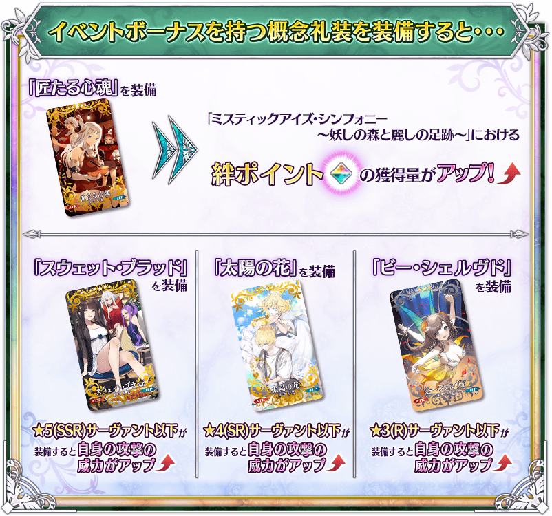
期間限定活動「魔眼交響曲 ～妖異森林與美麗足跡～」中，每通過一定數量踏破關卡的話，會領取踏破報酬。
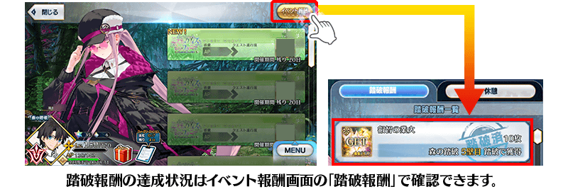
◆踏破報酬◆
| 關卡數 | 踏破報酬 | 個數 | |
|---|---|---|---|
| 第5壁 |

|
睿智的業火ALL★5(SSR) | 10 |
| 第10壁 | 巡靈之葉 | 200 | |
| 第15壁 |
|
睿智的業火ALL★5(SSR) | 10 |
| 第20壁 | 活動限定概念禮裝★5(SSR)「匠たる心魂」 | 1 | |
| ??? |
|
睿智的業火ALL★5(SSR) | 10 |
| ??? | 活動限定概念禮裝★5(SSR)「匠たる心魂」 | 1 | |
| ??? |
|
睿智的業火ALL★5(SSR) | 10 |
| ??? | 活動限定概念禮裝★5(SSR)「匠たる心魂」 | 1 | |
| ??? | 巡靈之葉 | 200 | |
| ??? |

|
迦勒底夢火 | 1 |
| ??? |
|
睿智的業火ALL★5(SSR) | 10 |
| ??? | 活動限定概念禮裝★5(SSR)「匠たる心魂」 | 1 | |
| ??? | 戰馬的幼角 | 5 | |
| ??? | 活動限定概念禮裝★5(SSR)「匠たる心魂」 | 1 | |
| ??? | 巡靈之葉 | 200 | |
| ??? |

|
英靈結晶・流星之芙芙ALL★4(HP) | 1 |
| ??? | 血之淚石 | 5 | |
| ??? | 活動限定概念禮裝★5(SSR)「匠たる心魂」 | 1 | |
| ??? |

|
英靈結晶・日輪之芙芙ALL★4(ATK) | 1 |
| ??? |
|
迦勒底夢火 | 1 |
| ??? | 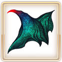 | 龍之逆鱗 | 5 |
| ??? |
|
英靈結晶・流星之芙芙ALL★4(HP) | 1 |
| ??? |

|
稀有稜鏡 | 1 |
| ??? |
|
英靈結晶・日輪之芙芙ALL★4(ATK) | 1 |
| ??? | 巡靈之葉 | 200 | |
| ??? |
|
英靈結晶・流星之芙芙ALL★4(HP) | 1 |
| ??? | 真理之卵 | 5 | |
| ??? |
|
英靈結晶・日輪之芙芙ALL★4(ATK) | 1 |
| ??? | 血之淚石 | 5 | |
| ??? |

|
傳承結晶 | 1 |
| ??? |
|
稀有稜鏡 | 1 |
| ??? | 戰馬的幼角 | 5 | |
| ??? |
|
稀有稜鏡 | 1 |
| ??? |
|
英靈結晶・流星之芙芙ALL★4(HP) | 1 |
| ??? | 巡靈之葉 | 200 | |
| ??? |
|
英靈結晶・日輪之芙芙ALL★4(ATK) | 1 |
| ??? | 真理之卵 | 5 | |
| ??? |
|
迦勒底夢火 | 1 |
| ??? | 龍之逆鱗 | 5 | |
| ??? |
|
傳承結晶 | 1 |
※踏破報酬可在通過該踏破關卡時獲得。
|
★★★★★SSR
◆最大解放時效果◆ |
為了記念期間限定活動「魔眼交響曲 ～妖異森林與美麗足跡～」的開幕，實施特別次數登入獎勵。
在期間中登入21次(1天算1次)的話，贈送黃金果實3個、白銀果實18個！
◆舉辦期間(3週內)◆
2023年7月5日(三) 19:00～7月26日(三) 11:59
◆贈送對象◆
2023年7月26日(三) 2:59前通過「特異點F 炎上汙染都市 冬木」的御主對象
※上述時間前，在管理室(ターミナル)畫面的關卡橫幅必須要有「CLEAR」的文字顯示。
【特別次數登入獎勵】
| 登入次數 | 贈送內容 | |
|---|---|---|
| 第1次 |

|
白銀果實 1個 |
| 第2次 |
|
白銀果實 1個 |
| 第3次 |
|
白銀果實 1個 |
| 第4次 |
|
白銀果實 1個 |
| 第5次 |
|
白銀果實 1個 |
| 第6次 |
|
白銀果實 1個 |
| 第7次 |

|
黃金果實 1個 |
| 第8次 |
|
白銀果實 1個 |
| 第9次 |
|
白銀果實 1個 |
| 第10次 |
|
白銀果實 1個 |
| 第11次 |
|
白銀果實 1個 |
| 第12次 |
|
白銀果實 1個 |
| 第13次 |
|
白銀果實 1個 |
| 第14次 |
|
黃金果實 1個 |
| 第15次 |
|
白銀果實 1個 |
| 第16次 |
|
白銀果實 1個 |
| 第17次 |
|
白銀果實 1個 |
| 第18次 |
|
白銀果實 1個 |
| 第19次 |
|
白銀果實 1個 |
| 第20次 |
|
白銀果實 1個 |
| 第21次 |
|
黃金果實 1個 |
※第1次的登入獎勵自7月5日(三) 19:00以後配發。 ※之後的登入獎勵會在每天3:00配發。 ※合計21天內能領取，但根據成為贈送對象的時間點，可能無法到此上限。

在期間限定活動「魔眼交響曲 ～妖異森林與美麗足跡～」的特設頁面，智慧型手機用桌布的贈送實施中！
在社群媒體分享特設頁面就能下載原創桌布，請務必使用。
◆配發期間(3週內)◆
2023年7月5日(三) 19:00～7月26日(三) 11:59
◆特設頁面◆
https://www.fate-go.jp/special/2023-mystic_eyes/
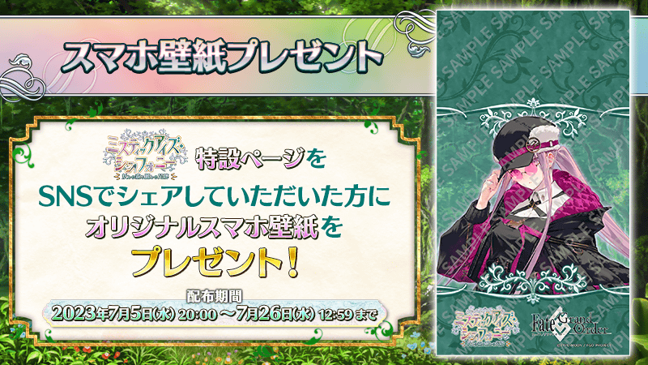
在2023年7月5日(三)的遊戲更新後反映的更新內容之中，介紹代表性的內容。
◆追加時間◆
2023年7月5日(三) 17:00～
追加可考量職階相性來自動編制隊伍的功能
使用新追加的「自動編制功能」後，變得可配合關卡來自動編制隊伍。
配合關卡內容而考量職階相性的自動編制外，還能加上稀有度和編制人數等細微設定的自動編制。
自動編制功能中，不只從者外也可自動編制概念禮裝，請活用讓更多從者活躍本活動！
◆自動編制的基準◆
・從能出撃的從者編制
・考量職階相性之中ATK高的從者優先編制
・概念禮裝在從者編制後對應剩餘COST從1st編制
・「活動加成概念禮裝 個別設定」的設定在ON情況用稀有度順序優先編制
・「活動加成概念禮裝 個別設定」的設定OFF或平常關卡的情況，從包含NP獲得概念禮裝之中ATK也高的優先編制
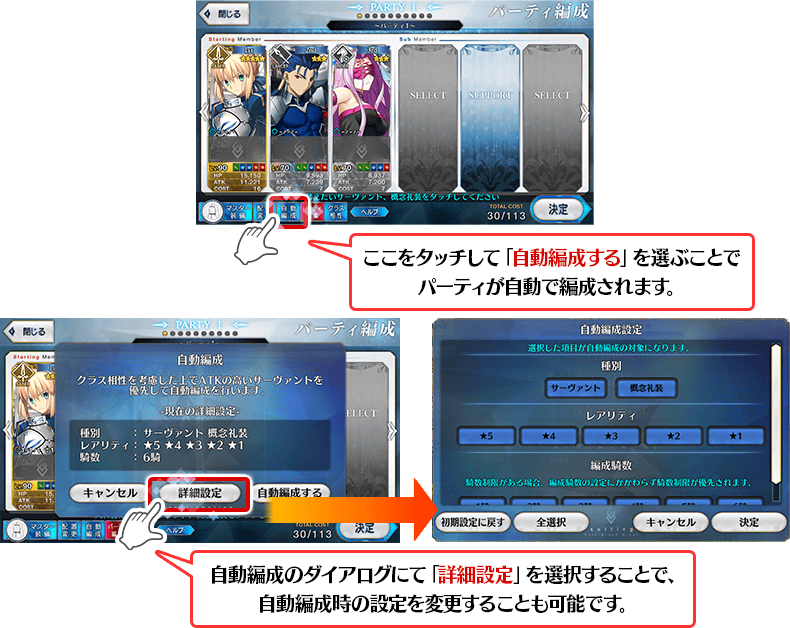 ※7月10日(一) 14:00圖片更新
>◆關於「自動編制功能」問題◆
・關於在2023年7月5日(三) 17:00追加的「自動編制功能」，已編制的隊伍決定「只限從者自動編制的設定」時，COST不足的狀況確認舉動與預想不同的問題。
【現在的舉動】
優先使用COST在從者的編制，移除COST不足份的概念禮裝
【預想的舉動】
概念禮裝如舊，用剩餘COST編制從者
關於本情況，在對應結束會立即再次報告。
【7月10日(一) 14:00追記】
關於本問題在7月10日(一) 14:00已修正結束。
【7月12日(三) 17:00追記】
其他還有，期間限定「魔眼交響曲 美杜莎(Saber)Pick Up召喚」等的情報公開中！
關於詳情，請自下述橫幅確認。